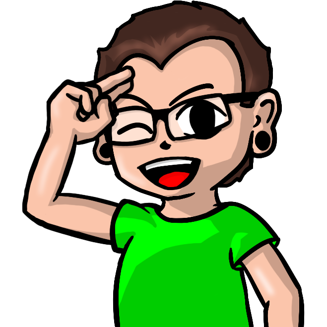

Sobre mim
🧩 Thiago Leoni Amaral
Desenhista e Desenvolvedor Front-End

Bem-vindo ao meu portfólio! Eu sou Thiago, um profissional com mais de 16 anos de experiência como desenhista e uma paixão em constante crescimento pelo desenvolvimento front-end. Como autodidata e com uma visão única moldada pelo autismo, sempre busco aprender de forma independente e explorar novas formas de criação. Além disso, tenho uma ampla experiência e domínio em TI, o que me permite me virar facilmente com qualquer desafio tecnológico.
Sobre Mim:
Com uma sólida formação e mais de uma década no mundo do desenho, desenvolvi uma visão única que combina criatividade e técnica. Minha jornada começou explorando diferentes estilos e técnicas artísticas, e ao longo dos anos, aprimorei meu domínio nas ferramentas Photoshop e Illustrator. Além disso, minha habilidade de aprender de forma autodidata me colocou em uma posição de estar sempre à frente, acompanhando as tendências do mercado e integrando novas técnicas ao meu trabalho. Também sou altamente capacitado na área de TI, com conhecimento avançado em formatação de computadores, instalação, configuração de redes e internet. Não dependo de suporte técnico, pois sou capaz de resolver quase qualquer desafio tecnológico sozinho. Essa competência me permite otimizar meu fluxo de trabalho e criar soluções criativas com uma base técnica sólida.
Desenhista:
A arte é minha linguagem, e cada traço conta uma história. Meu foco é transmitir emoções e criar experiências visuais memoráveis. Busco constantemente desafios que me permitam expandir meu repertório artístico e aplicar minha visão única de mundo, algo que meu autismo contribui para acentuar, permitindo-me perceber detalhes e nuances de uma forma diferente.
Desenvolvedor Front-End:
No mundo do desenvolvimento web, estou em uma jornada de aprendizado constante. Já domino HTML e CSS, e estou na fase avançada do estudo de JavaScript. Minha abordagem combina a estética artística com a funcionalidade, buscando criar interfaces intuitivas e envolventes. Como autodidata, tenho a habilidade de aprender rapidamente e aplicar novos conceitos de forma eficiente. Meu conhecimento de TI também me permite integrar melhor as tecnologias e otimizar processos no desenvolvimento de soluções web.
Conhecimentos Técnicos:
Além das habilidades essenciais em design e desenvolvimento, aplico meu conhecimento tecnológico para tornar meu trabalho mais prático. Tenho a capacidade de criar scripts e programas personalizados, agregando eficiência ao processo criativo e técnico. Sou familiarizado com diversas ferramentas open source, garantindo autonomia e flexibilidade ao invés de depender apenas de ferramentas pagas, o que me proporciona uma abordagem mais criativa e independente.
Objetivos Futuros:
Estou comprometido em aprimorar minhas habilidades como desenvolvedor front-end, explorando novas tecnologias e aprofundando meu entendimento. Meu objetivo é ter autonomia nos meus projetos, aplicando minha criatividade e habilidades técnicas para criar experiências digitais únicas.
Contato:
Se você está em busca de um profissional com uma rica bagagem em desenho, combinada com uma abordagem inovadora no desenvolvimento front-end e um sólido conhecimento em TI, estou aberto a novas colaborações. Entre em contato por alguma rede social. Obrigado por conhecer um pouco mais sobre mim. Estou ansioso para explorar novas oportunidades e contribuir para projetos desafiadores.